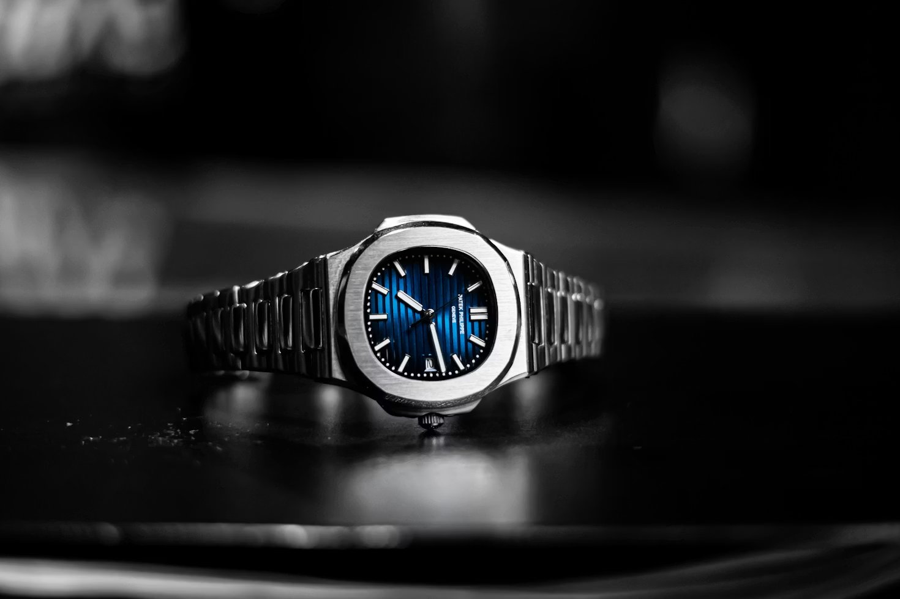
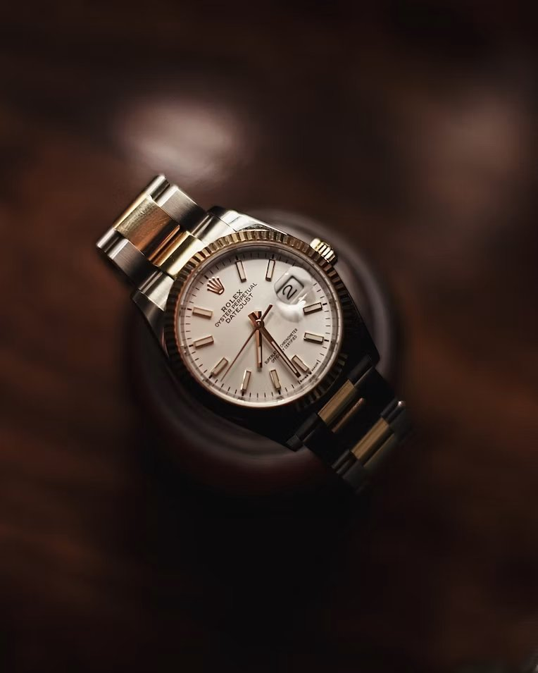

Investment Analysis · 2026
Rolex produces 1 million watches a year. Patek produces 70,000. That 14x production gap shapes every downstream dynamic — pricing, liquidity, volatility, and the relationship between what you pay and what you get back.
Last updated · June 2026
Every serious collector eventually faces the same question. You have capital to deploy into a watch. You want it to hold its value — ideally grow. Do you buy a Rolex or a Patek Philippe? The answer is not as simple as the watch forums would have you believe. Both brands are exceptional at retaining value. But they serve entirely different investment strategies. Understanding which one is right for you requires understanding how each brand behaves in the secondary market — not in theory, but with the actual 2026 numbers in front of you.
The Numbers
Rolex produces approximately 1 million watches per year. Patek Philippe produces approximately 70,000. That is a 14x production gap — and it shapes every downstream dynamic in both brands' secondary markets.
More Rolex supply means more Rolex liquidity. If you need to sell a Daytona or a Submariner quickly, you can. There is always a buyer. The market is deep, transparent and fast. Rolex is the most liquid luxury watch investment in the world.
Less Patek supply means less Patek liquidity — but higher multiples on the pieces that do trade. When a Patek Philippe Nautilus 5711 changes hands, it does so at 2.5x to 4.7x its original retail price. Rolex sports references typically achieve 1.5x to 2.5x retail. The tradeoff is straightforward: Rolex is easier to sell. Patek typically returns more when you do.
"Rolex sports references cluster around 1.5–2.5x retail. Patek steel sports icons cluster around 2.5–4.7x retail. The highest multiples sit on discontinued Patek steel sports watches."

2026 Market Data
The secondary market in 2026 has stabilised after the 2021-2023 peak and correction. Here is where the benchmark references stand today, sourced from WatchCharts and Lux Exclusives market data.
| Reference | Brand | Retail | Secondary Market | Multiple |
|---|---|---|---|---|
| Submariner 126610LN | Rolex | $10,800 | $14,000–$17,000 | 1.5x |
| Daytona 126500LN | Rolex | $14,800 | $28,000–$36,000 | 2.2x |
| GMT-Master II 126710BLRO | Rolex | $12,600 | $19,000–$24,000 | 1.7x |
| Royal Oak 15510ST (41mm) | Audemars Piguet | $28,300 | $38,000–$50,000 | 1.6x |
| Nautilus 5811/1G (White Gold) | Patek Philippe | $52,000 | $95,000–$120,000 | 2.1x |
| Nautilus 5711/1A (Discontinued) | Patek Philippe | $34,893 | $100,000–$160,000 | 4.0x+ |
| Aquanaut 5167A | Patek Philippe | $28,800 | $55,000–$75,000 | 2.3x |
The pattern is clear. Discontinued Patek steel sports references achieve the highest multiples of any watches in the market. The 5711 — discontinued in 2021 — continues to trade at four times its original retail price despite the broader market correction. Nothing in the Rolex catalogue achieves that multiple.
The Case for Rolex
Rolex's investment case rests on three pillars that Patek Philippe cannot match: global recognition, market depth and wearability.
You can wear a Rolex Submariner daily for 20 years and sell it. The watch is built to withstand it. The same cannot be said of most Patek complications, which require careful handling and regular servicing to maintain condition — and condition affects value dramatically in the Patek market.
During economic downturns, Rolex holds its value more reliably than Patek because of market depth. If credit tightens and watch buyers become scarce, you can still find a Submariner buyer. Patek's market is thinner and more susceptible to sentiment shifts, particularly at the higher price points.
For a first-time watch investor, or anyone who needs to know they can exit the position if necessary, Rolex is the safer choice. The Daytona and Submariner are as close to liquid as any tangible asset gets.

The Case for Patek Philippe
Patek Philippe's investment case is built on scarcity and horological pedigree. 70,000 watches per year across all complications, metals and sizes. Steel sports models — the Nautilus and Aquanaut — represent a fraction of that production. When demand is high and supply is fixed, multiples are the result.
The record that defines Patek's ceiling: the Grandmaster Chime Ref. 6300A-010 sold for $31 million at auction in 2019. No Rolex has come close. Patek watches at the top end behave more like art or vintage cars than watches — they appreciate with collector demand rather than tracking any broader market.
For the collector with a long time horizon — 10 years or more — and the financial position to not need to liquidate quickly, Patek Philippe consistently generates higher absolute returns than Rolex on a per-piece basis. The 5711's journey from a $34,893 retail price to $160,000 on the secondary market is the clearest evidence of what Patek can do when scarcity meets sustained demand.
Patek's structural scarcity — roughly 70,000 watches per year to Rolex's 1 million — ensures the premium is built into the supply itself, not a cyclical quirk. It will not disappear. The flip side is worth noting for any collector building a balanced watch portfolio: not every blue-chip reference demands a secondary-market premium to own. The Omega Speedmaster Professional remains one of the few historically significant watches you can still buy close to retail price, precisely because Omega does not constrain supply the way Patek and Rolex do.
Ask yourself: do you need to be able to sell this in three years if you have to? If yes — buy Rolex. The Daytona, Submariner and GMT-Master II are the most liquid luxury assets in the watch market. You will not lose money, and you will likely make some.
If you can genuinely hold for a decade and you have no immediate need for the capital — buy Patek Philippe steel sports. The Nautilus and Aquanaut generate the highest multiples in the market, backed by structural scarcity that will not change. The 5711's story is not an anomaly. It is what happens when 70,000 units per year meet sustained global collector demand.
The honest answer most advisors won't give you: the best watch investment is the one you'll actually wear. A watch that sits in a safe because you're afraid to scratch it is not an investment — it's anxiety in a box. Both Rolex and Patek reward confident, informed ownership. Choose the one you want on your wrist, understand its market, and hold with conviction.
Ready to source either brand? Our Watch Finder covers 63 verified sources worldwide — authorised retailers, grey market specialists and auction houses for both Rolex and Patek Philippe.
Open Watch FinderFAQ
They win on different terms. Rolex offers superior liquidity, durability and a lower entry point — a Submariner 126610LN retails around $10,800 and trades at roughly $14,000–$17,000. Patek offers higher long-term multiples and scarcity, producing only ~70,000 watches a year versus Rolex's ~1 million. Rolex is easier to buy and sell; Patek tends to appreciate more over the long term. This is general market commentary, not financial advice.
Scarcity. Patek produces roughly 70,000 watches a year against Rolex's ~1 million — a 14x gap. Far less supply against persistent collector demand drives larger premiums over retail and stronger long-term appreciation, especially for steel sports references like the Nautilus.
The Daytona 126500LN retails around $14,800 but trades at roughly $28,000–$36,000 on the secondary market in 2026 — close to double retail, reflecting Rolex's deep liquidity and persistent demand for its steel sports models.
Rolex, decisively. Its far larger production means a deep, fast, transparent secondary market — you can sell a Daytona or Submariner quickly with a buyer almost always available. Patek's scarcity cuts both ways: higher multiples, but a thinner market that can take longer to sell into.
Behind the curtain
You've read the story. The hard part is finding the right one — from someone worth trusting.
Enter the Watch Finder →